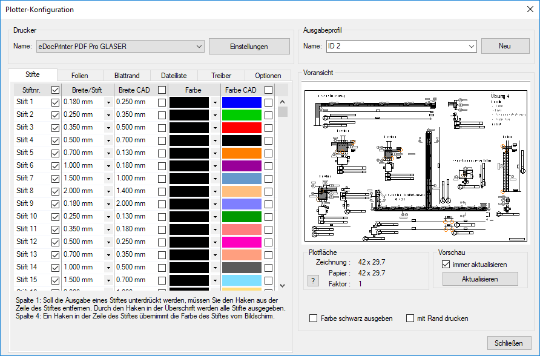
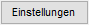
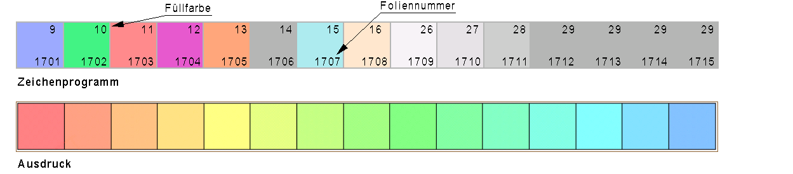

.gif)
Einstellungen für die Ausgabe einzelner oder mehrerer (Teil-)Zeichnungen.
Optionen im Dialog "Plotter-Konfiguration"
 |
Wenn Sie auf Ihrem Betriebssystem einen Drucker eingerichtet haben, können Sie hier den Druckertreiber auswählen. Name Auswahl eines auf Ihrem System verfügbaren Drucker- oder Plottertreibers. Klicken Sie auf  Ruft den Einstellungsdialog des Gerätetreibers auf. |
 , um die Dropdown-Liste mit allen eingerichteten Treibern zu öffnen. Klicken Sie anschließend den entsprechenden Treiber an.
, um die Dropdown-Liste mit allen eingerichteten Treibern zu öffnen. Klicken Sie anschließend den entsprechenden Treiber an.Stellen Sie hier für jeden Bedarf speziell definierte Ausgabeprofile ein. Sie können z. B. ein Profil erstellen, in dem alle Linien, Kreise und Texte in Schwarz ausgegeben werden. Name Auswahl eines Ausgabeprofils. Sie können ein anderes Profil wählen, indem Sie die die Dropdown-Liste [
Profil umbenennen Die Bezeichnung des aktuell markierten Profils kann direkt geändert werden. Wählen Sie das entsprechende Profil aus, benennen Sie es um und bestätigen Sie mit der Eingabetaste.
Es erscheint eine Meldung, in der Sie entscheiden können, ob Sie den Assistenten zum Einrichten eines neuen Ausgabeprofils benutzen möchten oder nicht. Wenn Sie Ja klicken, wird der Dialog Profilassistent geöffnet (» Profilassistent). Wählen Sie im Dialog die entsprechenden Optionen. Nach der Fertigstellung wird das Ausgabeprofil unter Name und im Funktionsbereich zur Auswahl angeboten. |
Voransicht
Darstellung der zu erwartenden Ausgabe. Verwenden Sie ggf. Zoomfunktionen (Zoom per Mausbewegung oder durch Drücken oder Drehen des Mausrads), um Bildausschnitte in der Voransicht zu vergrößern oder zu verkleinern. Plotfläche
Vorschau
Farbeinstellung werden ignoriert, alle Zeichnungselemente inklusive Füllungen werden in Schwarz ausgegeben. Wenn der Haken gesetzt ist, wird die Zeichnung mit dem auf der Registerkarte Blattrand eingestellten Blattrand ausgegeben. Falls bei der Ausgabe unter [Konst 3 | Blattr] ebenfalls ein Blattrand eingestellt ist, erscheint folgende Meldung:
Klicken Sie auf Nein, um den Druckvorgang abzubrechen. Wenn Sie auf Ja klicken, werden beide Blattränder ausgegeben! Deaktivieren Sie in diesem Fall einen der eingestellten Blattränder: a)Entfernen Sie in der Plotterkonfiguration den Haken bei mit Rand drucken. b)Löschen oder verschieben Sie den unter [Konst 3 | Blattr] eingestellten Blattrand in eine andere oder neue Folie und blenden Sie diese aus. Führen Sie anschließend die Druckausgabe erneut aus. |

Stiftnr. Auswahl der auszugebenden Stifte. Aktivierte Stifte (Haken in Checkbox) werden ausgegeben. Wenn ein Stift nicht ausgegeben werden soll, entfernen Sie den Haken aus der Checkbox. Über die Checkbox in der Spaltenüberschrift können alle Stifte aktiviert bzw. deaktiviert werden. Breite/Stift | Breite CAD Angabe der Stiftbreite auf dem Drucker/Plotter. Die Auswahl unter Breite/Stift ist nur möglich und wird nur berücksichtigt, wenn Breite CAD für diesen Stift deaktiviert ist. Öffnen Sie die Auswahl durch Klick auf und klicken Sie einen der vorgeschlagenen Werte an. Sie können die Breite auch direkt eingeben, dazu müssen Sie auf den Wert klicken. Farbe Auswahl der Stiftfarbe für die Ausgabe auf dem Drucker/Plotter.
Farbauswahl Führen Sie einen der folgenden Schritte aus: a)Freie Farbauswahl: Klicken Sie in der Spalte Farbe auf ein Farbfeld.
b)Normierte Farben: Öffnen Sie die Farbauswahl durch Klick auf .
Farbe CAD Wenn Farbe CAD aktiviert ist, wird der Stift in der Farbe der Bildschirmdarstellung ausgegeben. Über die Checkbox in der Spaltenüberschrift Farbe CAD können alle Stifte aktiviert bzw. deaktiviert werden.
|

Sie können einzelnen Folien Farben zuweisen. Die Farbe der Folie hat Vorrang vor der Farbe des Stiftes. Die Stiftbreite bleibt erhalten. Foliennr. Setzen Sie einen Haken in die Checkbox mit der Foliennummer, die in der gewählten Farbe ausgegeben werden soll. Damit werden alle in dieser Folie benutzten Stifte in der Folienfarbe ausgegeben, nicht in der Stiftfarbe. Die unterschiedlichen Linienbreiten bleiben dabei erhalten. Setzen Sie in das Kästchen der Spaltenüberschrift ein Häkchen, so bekommen alle Folien ebenfalls ein Häkchen und werden in der gewählten Farbe ausgegeben. Farbe Sie können erst dann eine Farbe auswählen, wenn die Folie einen Haken hat. Wählen Sie die Farbe für jede Folie. Siehe Registerkarte Stifte für Farbauswahl. Beispiel Die Quadrate sind mit beliebigen Füllfarben versehen. Die Füllungen wurden in dafür angelegte Folien transformiert.  |
Analog zum Blattrand im Konstruktionsprogramm [Konst3 | Blattr] können Sie hier Einstellungen für Ränder vornehmen, die auch auf Zeichnungsausschnitten einen entsprechenden Blattrand erzeugen. Vorgabe für Blattrand Auswahl des Blattrand-Typs und der verwendeten Stifte. Abstände Blattränder [mm]
Vorgaben für Raster
Ursprungsverschiebung [mm]: Hiermit können Sie den Blattrand und damit die ganze Zeichnung vom Ursprungspunkt des Plotters verschieben.
Faltung
Texte am Blattrand:
|
Auswahl der Dateien, die ausgegeben werden sollen. Wenn Sie den Dialog aus dem Konstruktions- und Bewehrungsprogramm aufrufen, ist die Liste zunächst leer. Wenn Sie im Bereich Vorschau die Schaltfläche anklicken oder einen Haken bei immer aktualisieren setzen, wird in der Voransicht der aktuelle Plan angezeigt. Dateiliste
Alle Zeichnungen in eine Datei (Option ist nur sichtbar, wenn der eDocPrinter PDF Pro GLASER als Druckertreiber gewählt wurde.)
Schaltflächen
|

Die Eingaben betreffen das hier ausgewählte Gerät. Die Einstellungen des Druckers haben direkte Auswirkungen auf die hier möglichen Einstellungen. So hat z. B. die Auswahl von Hoch- oder Querformat Einfluss auf die Maße für Breite und Höhe. Papierquelle von Drucker Nur aktiv bei WINDOWS® GDI. Breite x Höhe: Maximal mögliche Abmessungen (nicht editierbar). In der Auswahlbox erscheinen die vom Gerätetreiber aktivierten Papierformate. Diese setzen die Breite und Höhe für den festen Ausschnitt auf die maximalen Werte. Beim Plotten spielt die eingestellte Papierquelle eine untergeordnete Rolle, das eingestellte Papierformat kann kleiner als die erforderliche Plotfläche sein. Für die Druckmethode Fest stellen Sie die Ausgangsgröße ein. Zum Beispiel können mit entsprechenden Angaben für DIN A4 die Zeichnungsausschnitte im richtigen Maßstab ausgegeben werden. Breite, Höhe Treffen Sie in den Auswahlboxen für Breite und Höhe durch Anklicken der vorgeschlagenen Maße (DIN-Formate) Ihre Vorauswahl. Vom Programm werden diese Werte, je nach gewähltem Drucker, automatisch auf die Maximalwerte gesetzt. Sie können für die Ausgabe auf Plottern auch freie Breiten und Höhen direkt eingeben. Die Ausgabegröße sollte den verfügbaren Druckbereich nicht überschreiten.
Plotdatei
Einstellung ist nur verfügbar, wenn der Druckertreiber eDocPrinter PDF Pro GLASER ausgewählt wurde.
Skalierung
Auflösung für gefüllte Flächen:
Einstellungen
|

Einstiftplotter
Schnittstelle für Ausgabe
Exemplare
|